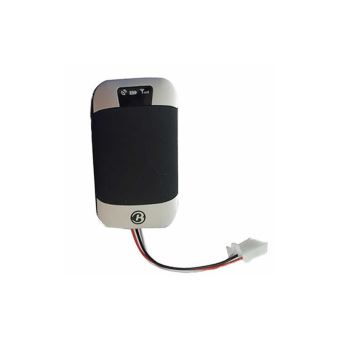
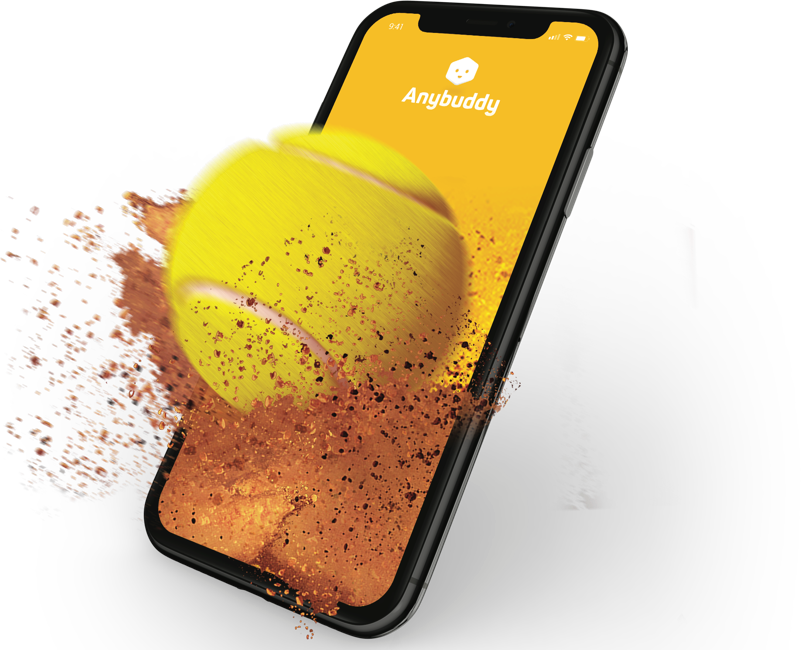
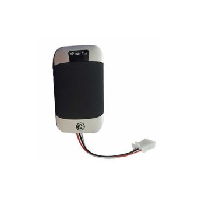
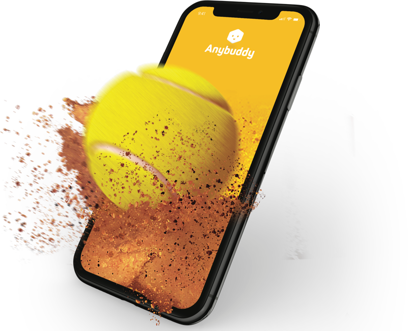

Les deux composants de notre projet :

Notre mini-Tracker dernière génération, doté d'un accéléromètre et d'un gyroscope. Il est capable de tracker le moindre mouvement.

Notre application qui recense vos statistiques, vous donne des conseils sur les coups a travailler, avec les bons gestes. Notre applicatio a été développée avec des professeurs de tennis diplômés.

Notre mini-Tracker dernière génération, doté d'un accéléromètre et d'un gyroscope. Il est capable de tracker le moindre mouvement.

Notre application qui recense vos statistiques, vous donne des conseils sur les coups a travailler, avec les bons gestes. Notre applicatio a été développée avec des professeurs de tennis diplômés.